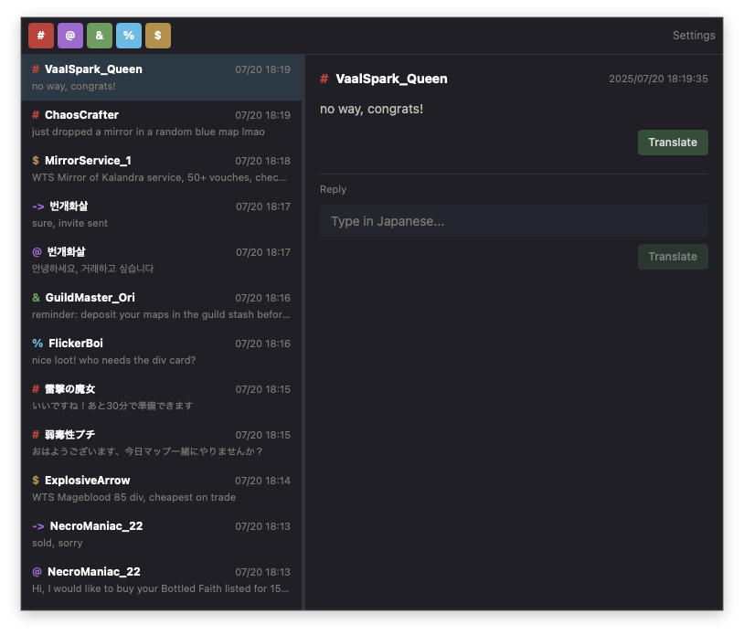
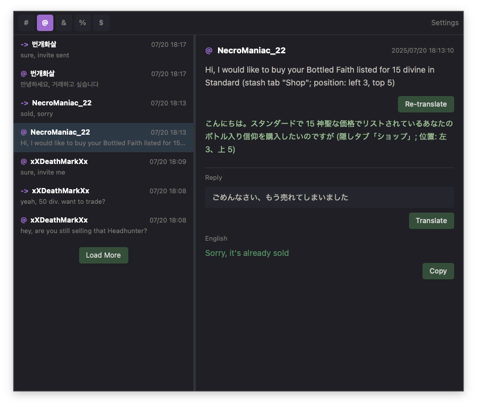
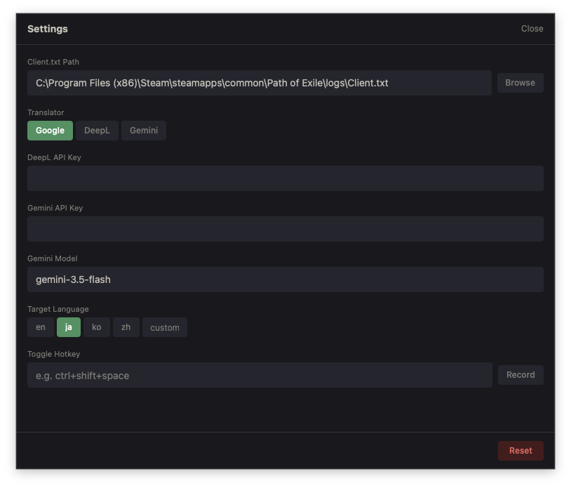

Real-time Path of Exile chat monitor with built-in translation. Path of Exile のログをリアルタイムに監視し、翻訳機能を内蔵したデスクトップアプリ
Monitors Client.txt and displays messages in real time. Filter by channel: Global, Whisper, Party, Guild, Trade. Client.txt を監視し、メッセージをリアルタイムに表示します。Global, Whisper, Party, Guild, Trade でフィルタリングできます

Translate incoming messages with one click. Type a reply, translate it, and copy it into PoE. Supports Google Translate, DeepL, and Gemini. 受信メッセージをワンクリックで翻訳できます。返信を入力して翻訳し、クリップボードにコピーできます。Google 翻訳、DeepL、Gemini に対応しています

Auto-saved settings. Configure Client.txt path, translator, target language, and global hotkey. 設定は変更時に自動保存されます。Client.txt パス、翻訳エンジン、翻訳先言語、ホットキーを設定できます

Always-on-top overlay with a configurable hotkey. Auto-hides when PoE regains focus. 設定可能なホットキーで表示を切り替えられます。PoE にフォーカスが戻ると自動で非表示になります